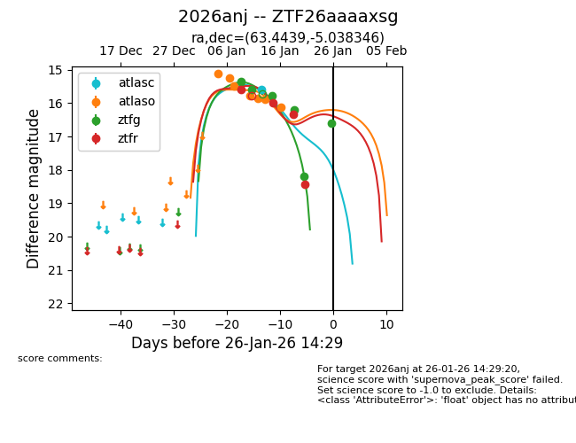
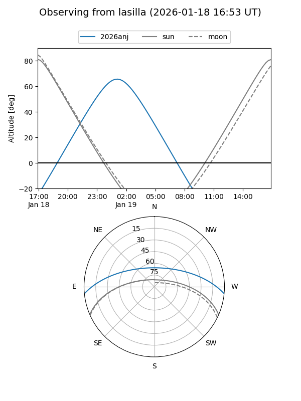
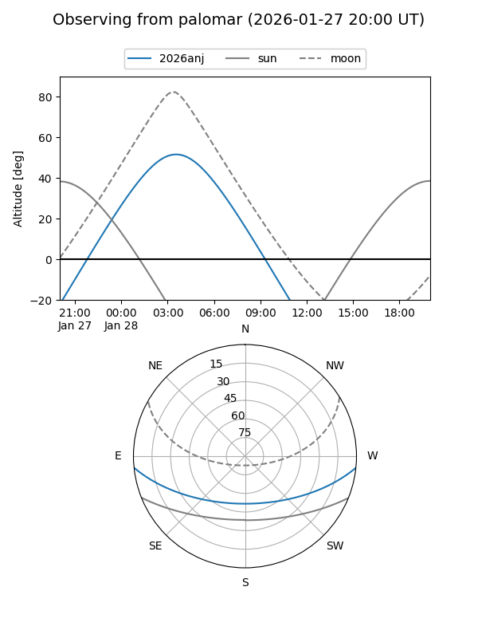
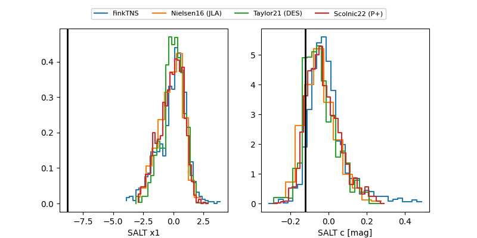

2026anj
Target 2026anj at 2026-01-28 07:41
Aliases and brokers:
FINK: link
Lasair: link
ALeRCE: link
TNS: link
YSE: link
alt names
ZTF26aaaaxsg (ztf,fink_ztf)
2026anj (tns,yse)
Coordinates:
equatorial (ra, dec) = 63.4439,-5.03835
equatorial (HMS+DMS) = 04:13:46.54,-05:02:18.04
galactic (l, b) = (197.6520,-37.08157)
Flags:
likely cv
Photometry:
last atlasc=15.59, atlaso=16.12, ztfg=16.60, ztfr=18.42
1 atlasc, 7 atlaso, 6 ztfg, 4 ztfr detections
Lightcurve

Visibility


Additional plots
